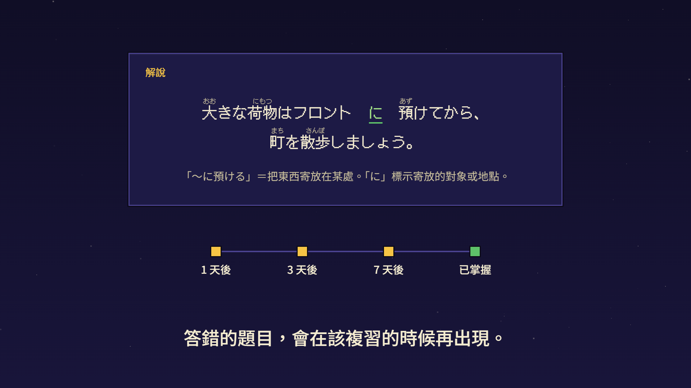

ことだまのたび
言霊の旅
用一款 RPG 學日文 — 自主學習成果發表
｜
指導老師
｜
← → 換頁 ・ F 全螢幕 ・ N 講稿（點姓名欄位可直接修改）
為什麼做這個
背單字很難撐下去，
但打電動我每天都會打
背完就忘題庫刷過一次，
過幾天又想不起來
過幾天又想不起來
錯了不知道為什麼只知道答案錯，
不知道錯在哪裡
不知道錯在哪裡
一個人撐不久沒有目標和回饋，
三天打魚兩天曬網
三天打魚兩天曬網
所以我想：能不能讓「答對日文」本身就是遊戲？
先看成果
30 秒認識《言霊の旅》
影片沒演到的部分
讓人想一直玩下去的設計

速答破盾
10 秒內答對，能削弱魔物的護盾；
逼自己反應要快，不能慢慢猜。
連對 FEVER
連續答對 3 題進入 FEVER，
傷害和獎勵都提升。

探索路線
安全小路：穩穩前進
危險捷徑：遇敵多、獎勵 ×1.3
走到一半有精英，最後是首領。

三種職業
言靈劍士・古籍學者・音韻旅藝人
能力不同，可以隨時切換。
答錯怎麼辦
答錯不是失敗，是多學一次

一定看完解說才能繼續，
錯的題目之後會再出現：
1 天後
3 天後
7 天後
也可以到「浸式刷題」
專心練錯題。
假名＋中文▶無假名▶全日文三段提示，程度變好就逐步拿掉
目前的規模
從 N4 一路到 N1
744
道題目
4
個程度 N4～N1
6
種題型
18
種魔物
6 個區域24 道聽力題10 篇長文閱讀限時模擬考「試煉神殿」
免費・免安裝・手機電腦都能玩・可以安裝成 App 離線玩
怎麼做出來的
我當企劃，AI 當工程師
我
企劃・決策・驗收
- 決定要做什麼
- 親自試玩、找問題
- 判斷改得好不好
Claude
寫程式
- 實作功能
- 修 bug
- 寫自動測試
其他 AI
試玩・美術
- Gemini：挑毛病
- Codex：生成美術
我提出需求▶AI 實作▶自動測試▶朋友試玩・回饋▶再修改
4天34次修改合併7個版本發佈
試玩回饋
朋友玩過之後，遊戲改了哪些地方
打首領前只是一直按『前進』加入路線選擇和中途精英；模擬 20 萬次，確認不會再「一場都沒打」
說明文字太多，還沒看完就想關解說先只顯示正解和一句重點，想看再展開
任務、冒險、城鎮太分散，不知道去哪任務加上「前往」按鈕，畫面上方顯示目前目標
表情符號在不同手機長得不一樣換成 34 個統一的像素圖示
遊戲裡也放了「回報」按鈕，玩家隨時能回報問題
困難 1
好玩了，卻學不到東西？
問題（AI 試玩時發現）朗讀按鈕會直接把答案唸出來
▶
改法作答時，空格改唸成「なになに」
問題裝備太強，一題就能打倒首領
▶
改法每場戰鬥都要答對一定題數才能贏
學到 遊戲機制要一直回頭檢查：這樣還有在學嗎？
困難 2
存檔也能拿來攻擊？
問題
玩家能匯入別人給的存檔，遊戲卻直接相信內容
<img onerror=…>藏一段 HTML，開存檔清單就執行"__proto__": {…}污染整個程式的物件{"toString": 1}遊戲一啟動就當掉{ …超大存檔… }卡死；空間滿了還說「匯入成功」▶
改法
先過一道 sanitizeSaveData
- ✓只收白名單欄位，
數字和清單重新驗證 - ✓存檔大小上限 1 MB
- ✓寫入失敗就自動還原，
不會再顯示假的成功
學到 從外面進來的資料，一律不能直接相信
困難 3
AI 也會出錯
問題題目讀音標錯、格式少寫一半
▶
改法寫檢查程式，744 題逐題自動檢查
問題修好一個地方，別的地方壞掉
▶
改法42 項自動測試，每次修改先跑過
學到 用 AI 不是不用檢查，而是要有方法地檢查
困難 4
AI 會失憶，還會互相干擾
問題
每次開新對話，AI 都會「失憶」，
不記得之前做過什麼
工作階段A
▶HANDOFF工作日誌
▶工作階段B
做完先寫交接，下一個 AI 讀完再開工
問題
有個工作階段中途被取消，
留下沒提交的修改，還誤刪了 CI 設定檔
送出修改(PR)
▶42 項自動測試
▶✓ 通過才能合併
GitHub Actions 每次自動檢查，沒過就擋下
學到 別靠 AI 的記憶，要靠寫下來的交接和自動檢查
困難 5
檔案太大，AI 記不住
兩個大檔案加起來超過 3 萬行
▶
核心
狀態
介面
城鎮
探索
戰鬥
閱讀
職業
刷題
選單
存檔
啟動
區域1
區域2
區域3
區域4
區域5
區域6
N3
N2
N1
聽力
程式 12 個檔案題庫 10 個檔案
學到 把大問題拆小，不只對人有用，對 AI 也是
我學到的事
四個收穫
- 1把大問題拆成小問題一次只解決一件事，就不會卡住
- 2AI 會犯錯，所以要會檢查測試和檢查程式比「感覺對了」可靠
- 3使用者的感受，比我的想像更準自己覺得清楚的地方，朋友一玩就卡住
- 4好的學習工具，要讓人願意每天打開學習效果和好不好玩一樣重要
言霊の旅
hinayoumiya-0721.github.io/kotodama-no-tabi
謝謝聆聽・Q&A